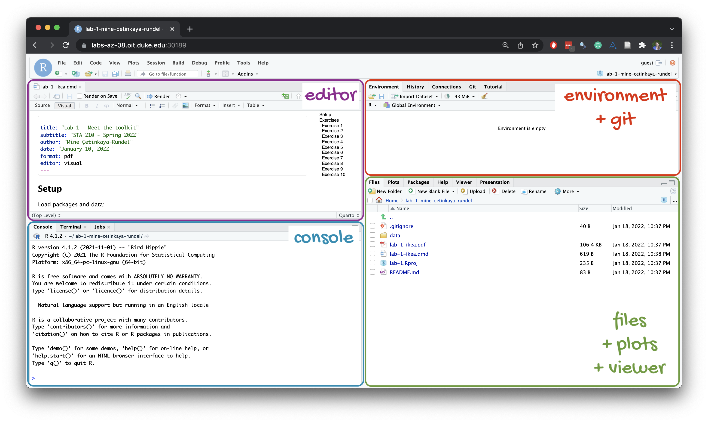

usethis::use_git_config(
user.name = "GitHub username",
user.email = "Email associated with your GitHub account"
)Lab 1 - Tidy Data Wrangling
Introduction
This lab will go through much of the same workflow we’ve demonstrated in class. The main goal is to reinforce our understanding of R and RStudio, which we will be using throughout the course both to learn the statistical concepts discussed in the course and to analyze real data and come to informed conclusions.An additional goal is to reinforce git and GitHub, the collaboration and version control system that we will be using throughout the course.
Note
Git is a version control system (like “Track Changes” features from Microsoft Word but more powerful) and GitHub is the home for your Git-based projects on the internet (like DropBox but much better).
As the labs progress, you are encouraged to explore beyond what the labs dictate; a willingness to experiment will make you a much better programmer. Before we get to that stage, however, you need to build some basic fluency in R and the tidyverse. Today we begin with the fundamental building blocks of R and RStudio: the interface, reading in data, and basic commands.
Learning goals
By the end of the lab, you will…
- Be familiar with the workflow using R, RStudio, Git, and GitHub
- Gain practice writing a reproducible report using RMarkdown
- Practice version control using GitHub
- Be able to create data visualizations using
ggplot2 - Be able to describe variable distributions and the relationship between multiple variables
Getting started
Set up your SSH key
You will authenticate GitHub using SSH. Below are an outline of the authentication steps; you are encouraged to follow along as your TA demonstrates the steps.
Note
You only need to do this authentication process one time on a single system.
- Type
credentials::ssh_setup_github()into your console. - R will ask “No SSH key found. Generate one now?” You should click 1 for yes.
- You will generate a key. It will begin with “ssh-rsa….” R will then ask “Would you like to open a browser now?” You should click 1 for yes.
- You may be asked to provide your GitHub username and password to log into GitHub. After entering this information, you should paste the key in and give it a name. You might name it in a way that indicates where the key will be used, e.g.,
sta210).
You can find more detailed instructions here if you’re interested.
Configure Git
There is one more thing we need to do before getting started on the assignment. Specifically, we need to configure your git so that RStudio can communicate with GitHub. This requires two pieces of information: your name and email address.
To do so, you will use the use_git_config() function from the usethis package.
Type the following lines of code in the console in RStudio filling in your name and the email address associated with your GitHub account.
For example, mine would be
usethis::use_git_config(
user.name = "mine-cetinkaya-rundel",
user.email = "cetinkaya.mine@gmail.com"
)You are now ready interact with GitHub via RStudio!
Clone the repo & start new RStudio project
Go to the course organization at BSMM-8740-Fall-2023 on GitHub. Click on the repo with the prefix lab-1. It contains the starter documents you need to complete the lab.
Click on the green CODE button, select Use SSH (this might already be selected by default, and if it is, you’ll see the text Clone with SSH). Click on the clipboard icon to copy the repo URL.
In RStudio, go to File ➛ New Project ➛Version Control ➛ Git.
Copy and paste the URL of your assignment repo into the dialog box Repository URL. Again, please make sure to have SSH highlighted under Clone when you copy the address.
Click Create Project, and the files from your GitHub repo will be displayed in the Files pane in RStudio.
Click lab-1-ikea.qmd to open the template R Markdown file. This is where you will write up your code and narrative for the lab.
R and R Studio
Below are the components of the RStudio IDE.

Below are the components of a Quarto (.qmd) file.

YAML
The top portion of your R Markdown file (between the three dashed lines) is called YAML. It stands for “YAML Ain’t Markup Language”. It is a human friendly data serialization standard for all programming languages. All you need to know is that this area is called the YAML (we will refer to it as such) and that it contains meta information about your document.
Important
Open the Quarto (`.qmd`) file in your project, change the author name to your name, and render the document. Examine the rendered document.
Committing changes
Now, go to the Git pane in your RStudio instance. This will be in the top right hand corner in a separate tab.
If you have made changes to your Rmd file, you should see it listed here. Click on it to select it in this list and then click on Diff. This shows you the difference between the last committed state of the document and its current state including changes. You should see deletions in red and additions in green.
If you’re happy with these changes, we’ll prepare the changes to be pushed to your remote repository. First, stage your changes by checking the appropriate box on the files you want to prepare. Next, write a meaningful commit message (for instance, “updated author name”) in the Commit message box. Finally, click Commit. Note that every commit needs to have a commit message associated with it.
You don’t have to commit after every change, as this would get quite tedious. You should commit states that are meaningful to you for inspection, comparison, or restoration.
In the first few assignments we will tell you exactly when to commit and in some cases, what commit message to use. As the semester progresses we will let you make these decisions.
Now let’s make sure all the changes went to GitHub. Go to your GitHub repo and refresh the page. You should see your commit message next to the updated files. If you see this, all your changes are on GitHub and you’re good to go!
Push changes
Now that you have made an update and committed this change, it’s time to push these changes to your repo on GitHub.
In order to push your changes to GitHub, you must have staged your commit to be pushed. click on Push.
Packages
We will use the following package in today’s lab.
library(tidyverse)── Attaching core tidyverse packages ──────────────────────── tidyverse 2.0.0 ──
✔ dplyr 1.1.2 ✔ readr 2.1.4
✔ forcats 1.0.0 ✔ stringr 1.5.0
✔ ggplot2 3.4.1 ✔ tibble 3.2.1
✔ lubridate 1.9.2 ✔ tidyr 1.3.0
✔ purrr 1.0.1
── Conflicts ────────────────────────────────────────── tidyverse_conflicts() ──
✖ dplyr::filter() masks stats::filter()
✖ dplyr::lag() masks stats::lag()
ℹ Use the ]8;;http://conflicted.r-lib.org/conflicted package]8;; to force all conflicts to become errorsThe tidyverse is a meta-package. When you load it you get eight packages loaded for you:
- ggplot2: for data visualization
- dplyr: for data wrangling
- tidyr: for data tidying and rectangling
- readr: for reading and writing data
- tibble: for modern, tidy data frames
- stringr: for string manipulation
- forcats: for dealing with factors
- purrr: for iteration with functional programming
The message that’s printed when you load the package tells you which versions of these packages are loaded as well as any conflicts they may have introduced, e.g., the filter() function from dplyr has now masked (overwritten) the filter() function available in base R (and that’s ok, we’ll use dplyr::filter() anyway).
We’ll be using functionality from all of these packages throughout the semester, though we’ll always load them all at once with library(tidyverse). You can find out more about the tidyverse and each of the packages that make it up here.
Data: Ikea furniture
Today’s data is all about Ikea furniture. The data was obtained from the TidyTuesday data collection.
Use the code below to read in the data.
ikea <- read_csv("data/ikea.csv")Data dictionary
The variable definitions are found in the help for Teams
?TeamsNo documentation for 'Teams' in specified packages and libraries:
you could try '??Teams'View the data
Before doing any analysis, you may want to get quick view of the data. This is useful when you’ve imported data to see if your data imported correctly. We can use the view() function to see the entire data set in RStudio. Type the code below in the Console to view the entire dataset.
library(Lahman)
dim(Teams)[1] 3015 48Exercises
Write all code and narrative in your R Markdown file. Write all narrative in complete sentences. Throughout the assignment, you should periodically Render your Quarto document to produce the updated PDF, commit the changes in the Git pane, and push the updated files to GitHub.
Tip
Make sure we can read all or your code in your PDF document. This means you will need to break up long lines of code. One way to help avoid long lines of code is is start a new line after every pipe (%>%) and plus sign (+).
Exercise 1
The view() function helped us get a quick view of the dataset, but let’s get more detail about its structure. Viewing a summary of the data is a useful starting point for data analysis, especially if the dataset has a large number of observations (rows) or variables (columns). Run the code below to use the dplyr::glimpse() function to see a summary of the ikea dataset.
How many observations are in the ikea dataset? How many variables?
dplyr::glimpse(Teams)
Note
In your lab-1.qmd document you’ll see that we already added the code required for the exercise as well as a sentence where you can fill in the blanks to report the answer. Use this format for the remaining exercises.
Also note that the code chunk as a label: glimpse-data. It’s not required, but good practice and highly encouraged to label your code chunks in this way.
Exercise 2
Ben Baumer worked for the New York Mets from 2004 to 2012. What was the team W/L record during those years? Use filter() and select() to quickly identify only those pieces of information that we care about.
mets <- Teams %>%
dplyr::filter(teamID == "NYN")
my_mets <- mets %>%
dplyr::filter(_)
my_mets %>%
dplyr::select(_,_,_,_)Exercise 3
We’ve answered the simple question of how the Mets performed during the time that Ben was there, but since we are data scientists, we are interested in deeper questions. For example, some of these seasons were subpar—the Mets had more losses than wins. Did the team just get unlucky in those seasons? Or did they actually play as badly as their record indicates?
In order to answer this question, we need a model for expected winning percentage. It turns out that one of the most widely used contributions to the field of baseball analytics (courtesy of Bill James) is exactly that. This model translates the number of runs4 that a team scores and allows over the course of an entire season into an expectation for how many games they should have won. The simplest version of this model is this:
\[ \hat{\text{W}}_{\text{pct}}=\frac{1}{1+\left(\frac{\text{RA}}{\text{RS}}\right)^{2}} \]
where \(\text{RA}\) is the number of runs the team allows to be scored, \(\text{RS}\) is the number of runs that the team scores, and \(\hat{\text{W}}_{\text{pct}}\) is the team’s expected winning percentage. Luckily for us, the runs scored and allowed are present in the Teams table, so let’s grab them and save them in a new data frame.
mets_ben <- Teams |>
select(_, _, _, _, _, _) |>
filter(_ == "NYN" & _ %in% 2004:2012)
mets_benFirst, note that the runs-scored variable is called R in the Teams table, but to stick with our notation we want to rename it RS.
mets_ben <- mets_ben |>
rename(_ = _) # new name = old name
mets_benThis is a good place to fender, commit, and push changes to your remote lab-1 repo on GitHub. Click the checkbox next to each file in the Git pane to stage the updates you’ve made, write an informative commit message (e.g., “Completed exercises 1 - 3”), and push. After you push the changes, the Git pane in RStudio should be empty.
Exercise 4
Next, we need to compute the team’s actual winning percentage in each of these seasons. Thus, we need to add a new column to our data frame, and we do this with the mutate() command.
mets_ben <- mets_ben |>
mutate(WPct = _)
mets_benThe expected number of wins is then equal to the product of the expected winning percentage times the number of games.
mets_ben <- mets_ben |>
mutate(W_hat = _)
mets_benExercise 5
In this case, the Mets’ fortunes were better than expected in three of these seasons, and worse than expected in the other six.
In how many seasons were the Mets better than expected? How many were they worse than expected?
This is a good place to render, commit, and push changes to your remote lab-1 repo on GitHub. Click the checkbox next to each file in the Git pane to stage the updates you’ve made, write an informative commit message (e.g., “Completed exercises 4 and 5”), and push. After you push the changes, the Git pane in RStudio should be empty.
Exercise 6
Naturally, the Mets experienced ups and downs during Ben’s time with the team. Which seasons were best? To figure this out, we can simply sort the rows of the data frame.
arrange(mets_ben, _)Exercise 7
In 2006, the Mets had the best record in baseball during the regular season and nearly made the World Series. How do these seasons rank in terms of the team’s performance relative to our model?
mets_ben %>%
mutate(Diff = _) |>
arrange(_)Exercise 8
Summarize the Mets performance
mets_ben |>
summarize(
num_years = _,
total_W = _,
total_L = _,
total_WPct = _,
sum_resid = _
)In these nine years, the Mets had a combined record of _ wins and _ losses, for an overall winning percentage of _.
This is a good place to render, commit, and push changes to your remote lab-1 repo on GitHub. Click the checkbox next to each file in the Git pane to stage the updates you’ve made, write an informative commit message (e.g., “Completed exercises 6 - 8”), and push. After you push the changes, the Git pane in RStudio should be empty.
Exercise 9
Next, let’s look at the relationship between the price and width of Ikea furniture. Fill in the code below to visualize the relationship between the two variables using a scatterplot.
Then, use your visualization to describe the relationship between the width and price of Ikea furniture.
ggplot(data = _____, aes(x = width, y = _____)) +
geom_point() +
labs(
x = "_____",
y = "_____",
title = "_____"
)Exercise 10
Discretize the years into three chunks: one for each of the three general managers under whom Ben worked. Jim Duquette was the Mets’ general manager in 2004, Omar Minaya from 2005 to 2010, and Sandy Alderson from 2011 to 2012.
mets_ben <- mets_ben %>%
mutate(
gm = ifelse(
yearID == _,
_,
ifelse(
yearID >= _,
_,
_)
)
)Alternatively, we use the case_when function
mets_ben <- mets_ben |>
mutate(
gm = case_when(
yearID == _ ~ _,
yearID >= _ ~ _,
TRUE ~ _
)
)You’re done and ready to submit your work! Render, commit, and push all remaining changes. You can use the commit message “Done with Lab 1!” , and make sure you have committed and pushed all changed files to GitHub (your Git pane in RStudio should be empty) and that all documents are updated in your repo on GitHub. The PDF document you submit to Gradescope should be identical to the one in your GitHub repo.
Exercise 11
Use the gm variable to define the manager groups with the group_by() operator, and run the summaries again, this time across the manager groups.
Bonus
Do all the analysis at once, but retain the step-by-step logic.
Submission
In this class, we’ll be submitting PDF documents to Gradescope.
Warning
Before you wrap up the assignment, make sure all documents are updated on your GitHub repo. We will be checking these to make sure you have been practicing how to commit and push changes.
Remember – you must turn in a PDF file to the Gradescope page before the submission deadline for full credit.
To submit your assignment:
- Go to http://www.gradescope.com and click Log in in the top right corner.
- Click ??
- Click on your STA 210 course.
- Click on the assignment, and you’ll be prompted to submit it.
- Mark the pages associated with each exercise. All of the pages of your lab should be associated with at least one question (i.e., should be “checked”).
- Select the first page of your PDF submission to be associated with the “Workflow & formatting” section.
Grading
Total points available: 50 points.
| Component | Points |
|---|---|
| Ex 1 - 10 | 45 |
| Workflow & formatting | 51 |
1 The “Workflow & formatting” grade is to assess the reproducible workflow. This includes having at least 3 informative commit messages and updating the name and date in the YAML.
Resources for additional practice (optional)
- Chapter 2: Get Started Data Visualization by Kieran Healy
- Chapter 3: Data visualization in R for Data Science by Hadley Wickham
- RStudio Cloud Primers
- Visualization Basics: https://rstudio.cloud/learn/primers/1.1
- Work with Data: https://rstudio.cloud/learn/primers/2
- Visualize Data: https://rstudio.cloud/learn/primers/3